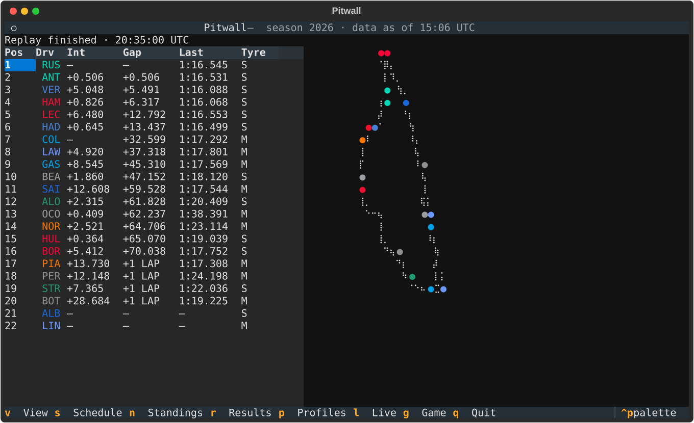
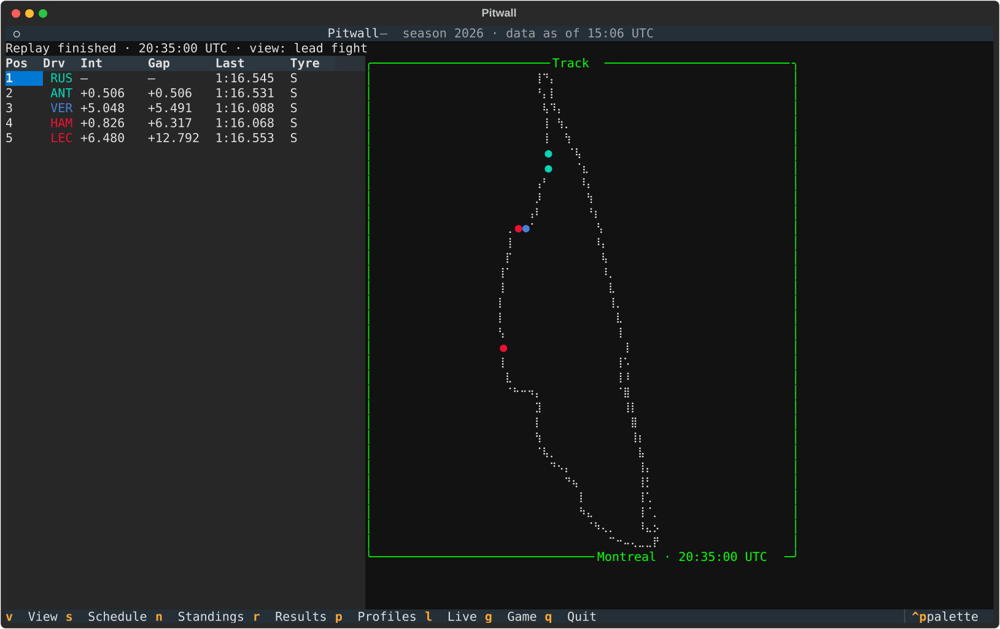
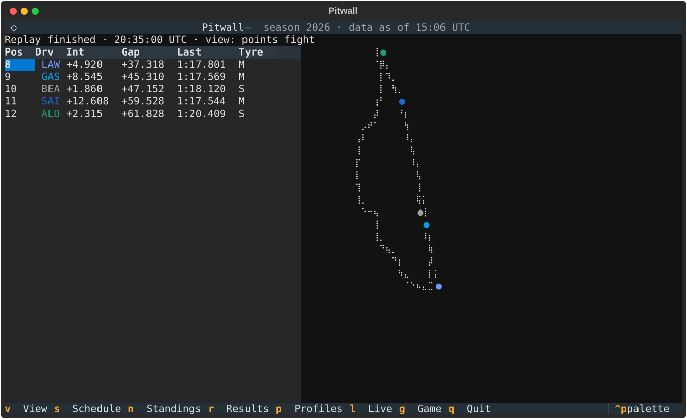

Live timing & track map
The live screen pairs a timing tower with a track-position map — both driven by the same tick stream, whether that stream is a live session or a replay.

The timing tower
Position, driver, interval, gap to leader, last lap, and tyre compound — folded
incrementally from lap, interval, position, and stint telemetry. Lapped cars
show +1 LAP; retired cars keep their last known state.
The track map
The circuit outline is drawn from the cars' own telemetry — x/y location samples projected onto a braille grid, so one full lap traces the track at 2×4 dots per terminal cell. Every covered car appears as a marker in its team colour, updated each tick.
The track map sits in its own bordered panel, captioned with the circuit and the current session time, and grows to fill a wide terminal.
Team colours
Driver codes in the tower and markers on the map are tinted with each team's real colour, straight from the OpenF1 drivers feed — McLaren papaya, Ferrari red, Mercedes teal. Drivers without a published colour fall back to the default text style instead of breaking the row.
Battle views
Press v to cycle focused views — the tower and the map filter together, so you watch one fight at a time:
| View | Who's in it |
|---|---|
| all | every classified car (and the unclassified, listed last) |
| lead fight | P1–P5 |
| podium fight | P1–P4 |
| points fight | P8–P12, straddling the points cutoff |


Replay engine
Replays are first-class: a deterministic engine merges every recorded stream into one ordered timeline and plays it back at a configurable speed multiplier. The repo ships a 60-second Canadian Grand Prix excerpt:
$ pitwall --replay tests/fixtures/openf1/1285_11291_excerpt --replay-speed 10
Live mode
pitwall --live discovers the latest session from OpenF1 and polls it at under
one request per second, with per-stream cursors and deduplication. Failures
degrade per-stream — one bad poll never kills the screen.